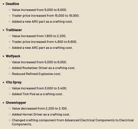

0

More than two decades after Maine became the first state to hand laptops to middle schoolers -- distributing 17,000 Apple machines across 243 schools in 2002 â" neuroscientist Jared Cooney Horvath told a U.S. Senate committee earlier this year that Gen Z is the first generation in modern history to score lower on standardized tests than the one before it.
The U.S. spent more than $30 billion in 2024 alone putting laptops and tablets in classrooms, and Horvath cited PISA data from 15-year-olds worldwide showing a stark correlation between time on school computers and worse scores. A 2014 study of 3,000 university students found they were off-task on their machines nearly two-thirds of the time. Fortune reported back in 2017 that Maine's own test scores hadn't budged in the 15 years since the program launched, and then-governor Paul LePage called it a "massive failure." Horvath framed the generation's eroding capabilities not as a personal failure but a policy one, calling them victims of a failed pedagogical experiment.
Read more of this story at Slashdot.
Discord is attempting to distance itself from the age verification provider Persona following a steady stream of user backlash. From a report: In an emailed statement to The Verge, Discord's head of product policy, Savannah Badalich, confirms the company "ran a limited test of Persona in the UK where age assurance had previously launched and that test has since concluded."
After Discord announced plans to implement age verification globally starting next month, users across social media accused Discord of "lying" about how it plans on handling face scans and ID uploads. Much of the criticism was directed toward Discord's partnership with Persona, an age verification provider also used by Reddit and Roblox.
Read more of this story at Slashdot.
Russia has opened an investigation into Telegram founder Pavel Durov for "abetting terrorist activities," [non-paywalled source] in the latest sign that his uneasy relationship with the Kremlin has broken down. From a report: Two Russian newspapers, including the state-run Rossiiskaya Gazeta and Kremlin-friendly tabloid Komsomolskaya Pravda, alleged on Tuesday that the messaging app had become a tool of western and Ukrainian intelligence services.
The articles, credited to materials from Russia's FSB security service, accused Telegram of enabling attacks in Russia and said that Durov's "actions ... are under criminal investigation." Russia has restricted Telegram's functions, accusing it of flouting the law and is seeking to divert users towards Max, a state-run rival messenger. The steps escalate pressure on a platform that remains deeply embedded in Russian public life.
Read more of this story at Slashdot.
Firefox 148 introduces granular AI controls and a global "AI kill switch" that allows users to disable or selectively manage the browser's AI features. Phoronix reports: Among the AI features that can be toggled individually are around translations, image alt text in the Firefox PDF viewer, tab group suggestions, key points in link previews, and AI chatbot providers in the sidebar. Firefox 148 also brings Firefox for Android, support for the Trusted Types API, CSS shape() function support, Sanitizer API support, WebGPU enhancements, and a variety of other changes. Developer chances can be found at developer.mozilla.org. Binaries are available from ftp.mozilla.org.
Read more of this story at Slashdot.
alternative_right shares a report from Phys.org: A team of researchers working at Quantinuum in the United Kingdom and QuSoft in the Netherlands has now developed a quantum algorithm that solves a specific sampling task -- known as complement sampling -- dramatically more efficiently than any classical algorithm. Their paper, published in Physical Review Letters, establishes a provable and verifiable quantum advantage in sample complexity: the number of samples required to solve a problem.
"We stumbled upon the core result of this work by chance while working on a different project," Harry Buhrman, co-author of the paper, told Phys.org. "We had a set of items and two quantum states: one formed from half of the items, the other formed from the remaining half. Even though the two states are fundamentally distinct, we showed that a quantum computer may find it hard to tell which one it is given. Surprisingly, however, we then realized that transforming one state into the other is always easy, because a simple operation can swap between them."
Read more of this story at Slashdot.
U.S. battery storage installations hit a record 57.6 GWh in 2025, and Texas is now poised to surpass California as the nationâ(TM)s largest storage market in 2026. Electrek reports: According to the US Energy Storage Market Outlook Q1 2026 from the Solar Energy Industries Association (SEIA) and Benchmark Mineral Intelligence, installations are now four times higher than totals from just three years ago. The US had a total of 137 GWh of utility-scale storage installed as of 2025, plus 19 GWh of commercial and industrial systems and 9 GWh of residential storage. Analysts expect the growth streak to continue. More than 600 GWh of energy storage is projected to be deployed nationwide by 2030, even as the Trump administration targets clean energy industries.
Two-thirds of utility-scale storage installed in 2025 was built in red states, including nine of the top 15 states for new installations. Texas is projected to surpass California as the countryâ(TM)s largest battery storage market in 2026. Standalone battery projects accounted for nearly 30 GWh of new capacity in 2025, while solar-plus-storage installations made up about 20 GWh. Residential storage deployments reached 3.1 GWh last year, a 51% increase year-over-year. Analysts say virtual power plant programs in states such as Massachusetts, Texas, Arizona, and Illinois are helping drive adoption by reducing costs and easing strain during peak demand periods.
The supply chain is shifting to support the boom. In 2025, some battery cell manufacturers pivoted production from EV batteries to dedicated stationary storage cells, converting existing lines and adjusting future plans. Lithium-ion cell manufacturing for stationary storage reached more than 21 GWh in 2025, enough to power Houston overnight, according to SEIAâ(TM)s Solar and Storage Supply Chain Dashboard. Meanwhile, US factories now have the capacity to manufacture 69.4 GWh of battery energy storage systems annually.
Read more of this story at Slashdot.
An anonymous reader quotes a report from the Guardian: When two men knocked on Ida Huddleston's door last May, they carried a contract worth more than $33m in exchange for the Kentucky farm that had fed her family for centuries. According to Huddleston, the men's client, an unnamed "Fortune 100 company," sought her 650 acres (260 hectares) in Mason county for an unspecified industrial development. Finding out any more would require signing a non-disclosure agreement. More than a dozen of her neighbors received the same knock. Searching public records for answers, they discovered that a new customer (PDF) had applied for a 2.2 gigawatt project from the local power plant, nearly double its annual generation capacity. The unknown company was building a datacenter. "You don't have enough to buy me out. I'm not for sale. Leave me alone, I'm satisfied," Huddleston, 82, later told the men.
As tech companies race to build the massive datacenters needed to power artificial intelligence across the US and the world, bids like the one for Huddleston's land are appearing on rural doorsteps nationwide. Globally, 40,000 acres of powered land – real estate prepped for datacenter development -- are projected to be needed for new projects over the next five years, double the amount currently in use. Yet despite sums that often dwarf the land's recent value, farmers are increasingly shutting the door. At least five of Huddleston's neighbors gave similar categorical rejections, including one who was told he could name any price.
In Pennsylvania, a farmer rejected $15m in January for land he'd worked for 50 years. A Wisconsin farmer turned down $80m the same month. Other landowners have declined offers exceeding $120,000 per acre -- prices unimaginable just a few years ago. The rebuffs are a jarring reminder of AI's physical bounds, and limits of the dollars behind the technology. [...] As AI promises to transcend corporeal fallibility, these standoffs reveal its very physical constraints -- and Wall Street's miscalculation of what some people value most. In the rolling hills of Mason county and farmland across America, that gap is measured not in dollars but in something harder to price: identity.
Read more of this story at Slashdot.
In her first major interview as Microsoft's new gaming chief, Asha Sharma said that "great games" must deliver emotional resonance and a distinct creative voice, while making clear that she has "no tolerance for bad AI." Stepping in after Phil Spencer's retirement, she's pledging consistency, community trust, and a human-first approach to storytelling as Xbox enters a new era. Variety reports: Sharma was quick in laying out her top priorities for Microsoft Gaming in an internal memo announcing her promotion, noting "great games," "the return of Xbox" and the "future of play" as her three main commitments to the gaming community. So first, what makes a great game for Sharma, whose roles prior to CoreAI include top positions at Instacart and Meta? The new Microsoft Gaming CEO tells Variety it's all about games with "deep emotional resonance" and "a distinct point of view." She wants to develop stories that make players "feel something," like the kind of feelings Campo Santo's 2016 first-person mystery "Firewatch" elicited in her.
Sharma takes on the mantle as head of the leading competitor to Sony's PlayStation and Nintendo knowing full well she's entering the role as an outsider to the larger gaming community and has "a lot to learn" still. But Sharma says she's got a commitment to "being grounded in what the community is telling us." "I'm coming into gaming as a platform builder," Sharma said, adding that her goal is to "earn the right to be trusted by players and developers" and show the fanbase that "consistency" over time. In her interview with Variety, Sharma acknowledged the tumultuous state of the gaming industry, referencing Matthew Ball's recent State of Video Gaming in 2026 report as evidence that the larger "transformation" of the sector is "protecting what we believe in while remaining open-minded about the future."
Due to her strong background in AI, initial reactions to Sharma's appointment have raised concerns about what her specific views are on the use of generative AI in game development. Sharma says her stance is simple: she has "no tolerance for bad AI." "AI has long been part of gaming and will continue to be," Sharma said, noting that gaming needs new "growth engines," but that "great stories are created by humans."
Read more of this story at Slashdot.
joshuark quotes a report from BleepingComputer: Microsoft is investigating a known issue that causes the mouse pointer to disappear in the classic Outlook desktop email client for some users. This bug has been acknowledged almost two months after the first reports started surfacing online, with users saying that Outlook became unusable after the mouse pointer vanished while using the app.
[...] Microsoft explained in a recent support document that the mouse pointer (and in some cases the cursor) will suddenly vanish as users move it across Outlook's interface. "When using classic Outlook, you may find that the mouse pointer or mouse cursor disappears as you move the pointer over the Outlook interface," it said. "Although the mouse pointer is not there, the email in the message list will change color as you hover over it. This issue has also been reported with OneNote and other Microsoft 365 apps to a lesser degree."
Microsoft added that the Outlook team is investigating the issues and will provide updates as more information becomes available. While a timeline for a permanent fix is not yet available, Microsoft has offered three temporary workarounds that require affected users to click an email in the message list when the cursor disappears, which may cause it to reappear. Alternatively, switching to PowerPoint, clicking into an editable area, and then returning to Outlook may also restore the mouse pointer.
Read more of this story at Slashdot.
A 7,000-word "doomsday" thought experiment from Citrini Research helped trigger an 800-point drop in the Dow, "painting a dark portrait of a future in which technological change inspires a race to the bottom in white-collar knowledge work," reports the Wall Street Journal. From the report: Concerns of hyperscalers overspending are out. Worries of software-industry disruption don't go far enough. The "global intelligence crisis" is about to hit. The new, broader question: What if AI is so bullish for the economy that it is actually bearish? "For the entirety of modern economic history, human intelligence has been the scarce input," Citrini wrote in a post it described as a scenario dated June 2028, not a prediction. "We are now experiencing the unwind of that premium."
Many of Monday's moves roughly aligned with the situation outlined by Citrini, in which fast-advancing AI tools allow spending cuts across industries, sparking mass white-collar unemployment and in turn leading to financial contagion. Software firms DataDog, CrowdStrike and Zscaler each plunged more than 9%. International Business Machines' 13% decline was its worst one-day performance since 2000. American Express, KKR and Blackstone -- all name-checked by Citrini -- tumbled. That anxiety, coupled with renewed uncertainty about trade policy from Washington, weighed down major indexes Monday. The Dow Jones Industrial Average led declines, falling 1.7%, or 822 points. The S&P 500 shed 1%, while the Nasdaq composite retreated 1.1%.
[...] Monday's market swings extended a run of AI-linked volatility. A small research outfit that has garnered a huge Substack following for macro and thematic stock research, Citrini said in its new post that software firms, payment processors and other companies formed "one long daisy chain of correlated bets on white-collar productivity growth" that AI is poised to disrupt. [...] Shares in DoorDash also veered 6.6% lower Monday after Citrini's Substack note called the delivery app a "poster child" for how new tools would upend companies that monetize interpersonal friction. In the research firm's scenario, AI agents would help both drivers and customers navigate food deliveries at much lower costs.
Read more of this story at Slashdot.
An anonymous reader quotes a report from the Financial Times: Officials working with Donald Trump's "Board of Peace" are exploring setting up a stablecoin for Gaza as part of efforts to reshape the devastated Palestinian enclave's economy, according to five people familiar with the discussions. The talks around introducing a stablecoin -- a type of cryptocurrency whose value is pegged to a mainstream currency, such as the US dollar -- are at a preliminary stage, and many details of how one could be introduced in Gaza remain to be determined.
But officials have discussed the idea as part of their plan for the future of the enclave, where economic activity collapsed during Israel's two-year war with Hamas and the traditional banking and payments system has been severely impaired. A person familiar with the project said the stablecoin was expected to be tied to the US dollar, with the hope that Gulf Arab and Palestinian companies with expertise in the field of digital currencies will help spearhead the effort. "This will not be a 'Gaza Coin' or a new Palestinian currency, but a means to allow Gazans to transact digitally," the person said.
Work on the idea is being led by Liran Tancman, an Israeli tech entrepreneur and former reservist who is now working as an unpaid adviser to Trump's "Board of Peace," the US-led body tasked with rebuilding Gaza, according to two people familiar with the matter. [...] According to the person familiar with the project, the "Board of Peace" and NCAG will decide on the stablecoin's regulatory framework and access, although "nothing definitive" has yet been finalized. Speaking at a meeting of the "Board of Peace" in Washington last week, Tancman said the NCAG was working on building "a secure digital backbone, an open platform enabling e-payments, financial services, e-learning, and healthcare with user control over data", but did not elaborate.
Read more of this story at Slashdot.
OpenAI has formed a multi-year "Frontier Alliance" with four consulting heavyweights to accelerate enterprise adoption of its no-code AI agent platform, OpenAI Frontier. TechCrunch reports: The alliance includes multi-year partnerships between OpenAI and four major consulting firms, Boston Consulting Group (BCG), McKinsey, Accenture and Capgemini, to sell its enterprise products. OpenAI's Forward Deployed Engineering team will work with the consulting giants to help them implement OpenAI's enterprise-focused technologies like OpenAI Frontier into customers' tech stacks.
The company launched OpenAI Frontier in early February. The no-code open software allows users to build, deploy, and manage AI agents both built on OpenAI's AI models and beyond. OpenAI argues in its latest announcement that consultants are the right avenue to get enterprises on board.
"AI alone does not drive transformation. It must be linked to strategy, built into redesigned processes, and adopted at scale with aligned incentives and culture to deliver sustained outcomes," BCG CEO Christoph Schweizer said in OpenAI's blog post. "Our expanded partnership combines OpenAI's Frontier platform with BCG's deep industry, functional, and tech expertise and BCG X's build-and-scale capabilities to drive measurable impact with safeguards from day one."
Read more of this story at Slashdot.
Panasonic is handing over the manufacturing, marketing, and sales of its TVs to Shenzhen-based Skyworth, effectively exiting in-house TV production. Ars Technica reports: Skyworth is a Shenzhen-headquartered TV brand. The company claims to be "a top three global provider of the Android TV platform." In July, research firm Omdia reported that Skyworth was one of the top-five TV brands by sales revenue in Q1 2025; however, Skyworth hasn't been able to maintain that position regularly. Panasonic made its announcement at a "launch event," FlatpanelsHD reported today. During the event, a Panasonic representative reportedly said: "Under the agreement the new partner will lead sales, marketing, and logistics across the region, while Panasonic provide expertise and quality assurance to uphold its renowned audiovisual standards with full joint development on top-end OLED models."
Panasonic also said that it will provide support "for all Panasonic TVs sold up to March 2026 and all those available from April." Skyworth-made Panasonic TVs will be sold in the US and Europe. In the latter geography, the companies are aiming for double-digit market share. [...] The news means there's virtually no TV production happening in Japan anymore, as other Japanese companies, like Sharp, Toshiba, Hitachi, and Pioneer, have already exited TV production. Earlier this year, Sony announced that it was ceding control of its TV hardware business to TCL.
Read more of this story at Slashdot.
An anonymous reader shares a report: Microsoft Azure CTO Mark Russinovich and VP of Developer Community Scott Hanselman have written a paper arguing that senior software engineers must mentor junior developers to prevent AI coding agents from hollowing out the profession's future skills base.
The paper, Redefining the Engineering Profession for AI, is based on several assumptions, the first of which is that agentic coding assistants "give senior engineers an AI boost... while imposing an AI drag on early-in-career (EiC) developers to steer, verify and integrate AI output."
In an earlier podcast on the subject, Russinovich said this basic premise -- that AI is increasing productivity only for senior developers while reducing it for juniors -- is a "hot topic in all our customer engagements... they all say they see it at their companies." [...] The logical outcome is that "if organizations focus only on short-term efficiency -- hiring those who can already direct AI -- they risk hollowing out the next generation of technical leaders," Russinovich and Hanselman state in the paper.
Read more of this story at Slashdot.
Microsoft has spent more than $76 billion acquiring game studios and publishers over the past few years in an attempt to turn Xbox into a Netflix-like subscription platform, and the result is that nobody -- possibly not even Microsoft -- can clearly articulate what Xbox actually is anymore, The Verge writes.
The brand started as a powerful video game console, but Game Pass and cloud gaming pushed it toward a hazier identity: the "This is an Xbox" ad campaign tried to redefine it as any device that could play Xbox games, whether a PC, a smart TV, a phone, or a Windows handheld. Microsoft then went further and started publishing its biggest franchises on PlayStation, making it one of the largest third-party publishers on a rival's platform.
Phil Spencer, who led the division for over a decade and drove the subscription pivot, announced his retirement last week, and incoming CEO Asha Sharma has pledged "the return of Xbox" -- though her memo also talks about expanding across PC, mobile, and cloud, which sounds a lot like the status quo.
Read more of this story at Slashdot.
Lora Kolodny / CNBC : Waymo opens its robotaxi service to “select riders” in Dallas, Houston, San Antonio, and Orlando, expanding its operations to 10 US cities — Alphabet-owned Waymo on Tuesday opened its robotaxi service to some public passengers in Dallas, Houston, San Antonio and Orlando, the company announced.
Annie Palmer / CNBC : Software stocks rebound as Anthropic announces partnerships integrating its AI tools with enterprise apps, including Slack, Intuit, Docusign, and FactSet — Software stocks made a comeback on Tuesday after Anthropic hosted its enterprise agents event, where it revealed new partnerships …
Bloomberg : SambaNova, which says its SN50 AI chip runs 5x faster than its rivals and will be deployed by SoftBank, raised a $350M Series E led by Vista Equity and Cambium — Artificial intelligence chip startup SambaNova Systems Inc. raised $350 million in a new funding round and said that customers …
Natalie Breymeyer / Axios : Beverly Hills-based Subject, whose streaming-style, on-demand platform provides digital curriculum and learning insights for grades 6-12, raised $28M — Subject, a Beverly Hills-based AI education platform, raised a $28 million venture round led by Vistara Growth, CEO Michael Vilardo tells Axios Pro exclusively.
New York Times : DOJ files reveal how Jeffrey Epstein ingratiated himself with top Microsoft executives, aiding his return to society after his release from prison in 2009 — For more than two decades, the convicted sex offender developed a network at the tech giant, making him privy to succession discussions and other business.
Natalie Breymeyer / Axios : Slang AI, which develops voice-based software for the hospitality industry that answers inbound calls, manages reservations, and more, raised a $36M Series B — Slang AI, a New York-based AI platform for the hospitality industry, raised a $36 million Series B led by U.S. Venture Partners, CEO Alex Sambvani tells Axios exclusively.
Lily Mae Lazarus / Fortune : Profound, which tracks how AI models recommend brands across millions of prompts, raised a $96M Series C at a $1B valuation, bringing its total funding to $155M — Profound, an 18-month-old startup betting that the future of marketing will be shaped not by Google links but by AI answers, is now a unicorn.
Robin Wigglesworth / Financial Times : An Evercore ISI economist criticizes Citrini's AI report, calling its assumptions “extreme and improbable”, but says it's a thought-provoking exercise — Most of the sell-side has remained hilariously silent at a mere Substacker seemingly shaking markets, even though the anguish and frustration is almost palpable.
Geoff Weiss / Business Insider : Letter AI, whose sales software provides personalized, deal-specific guidance, raised a $40M Series B, four months after a $10.6M Series A — - Letter AI has raised $40 million and is now valued in the hundreds of millions. — The sales software startup uses AI to deliver real-time, deal-specific guidance.
Krisztian Sandor / CoinDesk : Kraken launches what it claims are the first regulated perpetual futures contracts based on tokenized stocks, available to non-US users and trading 24/7 — The crypto exchange is bringing U.S. stocks closer to the crypto world, letting users trade derivatives of tokenized stocks around-the-clock and with 20x leverage.
Ram Iyer / TechCrunch : Nimble, whose AI agents structure real-time web data into tables that can be queried like a database, raised a $47M Series B, bringing its total funding to $75M — Believe it or not, web search is still thriving as an industry. As businesses invest in using AI agents to make the most of their data …
Matt Kapko / CyberScoop : CrowdStrike says the average breakout time for attackers moving from intrusion to other network systems fell to 29 minutes in 2025, a 65% YoY increase in speed — The average time from intrusion to network movement in 2025 was 29 minutes, a 65% increase in speed from the year prior. — Learn more.
Ian Allison / CoinDesk : Sources: Meta aims to enter the stablecoin space in H2, with plans to integrate a vendor to administer stablecoin-backed payments and implement a new wallet — The Facebook owner's stablecoin integration involves planning a third party vendor to help administer stablecoin-based payments …
Rachel Metz / Bloomberg : Anthropic launches Claude Cowork agent tools for investment banking, HR, design, and more, including a specialized financial plugin developed alongside FactSet — Anthropic PBC is expanding the reach of its Claude chatbot into new sectors, weeks after the startup sparked a market meltdown …
Emma Roth / The Verge : Google says AI music generation platform ProducerAI is joining Labs and will be powered by a Lyria 3 preview version; ProducerAI was developed alongside artists — ProducerAI will use Google's Lyria 3 AI model to help users generate sounds, workshop lyrics, remix songs, and more.